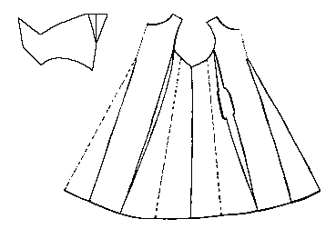

Pattern drawing based on N�rlundA large man's garment with short sleeves, found with a hood. It is made of front and back pieces in which double gores, 87 cm (34.3") long, have been inserted, although the back gore is just double sized with a false seam down the center. There is a large double gore on the right side with a false seam and a second gore; on the right side there is a single large gore with three false seams, showing the original material to have been at least 82 cm (32.2") wide.
The waist diamerter of the garment is 124 cm (48.8"), and the hem diameter is 325 cm (127.9"). The neck diameter is 87 cm (34.3") around. The arm hole is 68 cm (26.8") in diameter and narrows towards the end. The front of the outfit is 117 cm (46") long. It is 58 cm (22.8") from the hem to the bottom of the pocket slit.
The material is a heavy and course fourshaft twill.
Go to Tunic Page; Herjolsnes Site Page
Some Clothing of the Middle Ages -- Tunics -- Herjolfsnes 45, by I. Marc Carlson, Copyright 1997 This code is given for the free exchange of information, provided the Author's Name is included in all future revisions, and no money change hands-